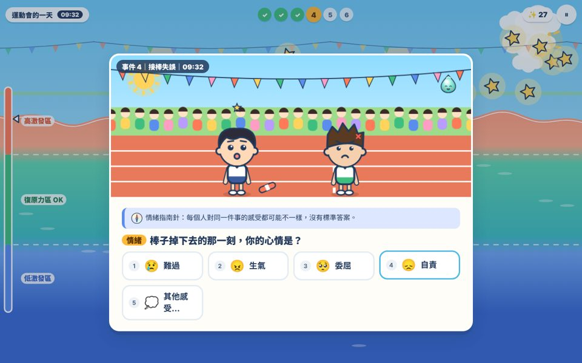
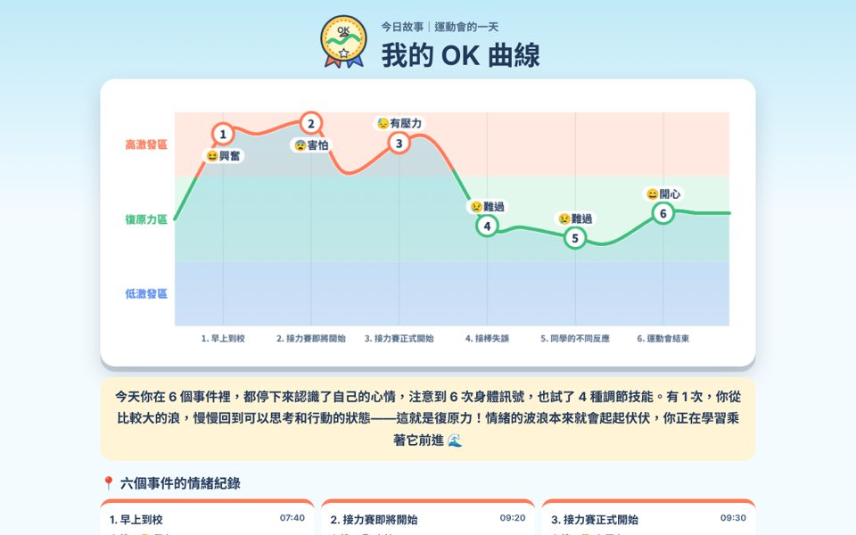

學生乘著代表情緒激發程度的「OK 曲線」衝浪，在校園一天的六個事件中練習辨識情緒、覺察身體訊號、選用調節策略，並為自己的行動做選擇。
理念設計理念
國小中高年級的情緒經驗越來越多元，比賽、考試、同儕衝突與新環境都會帶來強烈感受，但學生常只能說出「開心」或「生氣」，也不知道情緒升高或低落時可以怎麼辦。本作品把抽象的「情緒調節」變成一條看得見、摸得到的波浪：學生的選擇會讓波浪升高或降低，再透過實際操作的小遊戲，練習讓自己回到可以思考與行動的狀態。
概念依據：OK 曲線的三個區域，改編自心理學中的「容納之窗」（Window of Tolerance，Siegel, 1999）與「復原力區」（Zone of Resilience）概念：人在一定的激發範圍內，最能有效思考與回應；超出範圍時會變得過度緊繃（高激發）或過度低落、麻木（低激發）。本作品把它轉化成國小學生能理解的語言與畫面，作為教學引導，不是臨床或診斷工具。
高激發區
能量很多：興奮、期待，也可能是緊張、生氣。高激發不等於壞情緒。
復原力區 OK Zone
還能思考、學習、和別人互動。復原力不是一直開心，而是能慢慢回到這裡。
低激發區
能量變少：失落、累、想躲起來。低激發不等於失敗，也需要被照顧。
三個核心設計原則
- 情緒與激發程度分開處理：「興奮」和「焦慮」都在高激發區，但感受不同。學生先選情緒，再選身體訊號，兩者一起決定波浪高度，所以每個人的曲線都不一樣。
- 先接納，再調節：每次選完情緒，情緒精靈「浪浪」都會先接納感受，再邀請學生選擇要不要使用調節技能；不要求否認感受，也不強迫正向思考。
- 不以情緒評分：沒有分數與排名，也不要求永遠待在綠色區。重點是認識自己的波浪，並找到照顧自己的方法。
SEL對應 SEL 五大核心能力（CASEL）
| 核心能力 | 遊戲中怎麼練習 | 例子 |
|---|---|---|
| 自我覺察 | 每個事件選出自己的情緒與身體訊號，看見波浪的變化 | 接力賽前：選「緊張」＋「心跳變快、手心冒汗」 |
| 自我管理 | 四種可操作的調節技能，用完自評有沒有幫助 | 考試卡關：停靠安全港，暫停一下、喝口水 |
| 社會覺察 | 同一事件中，不同同學有不同反應與感受 | 掉棒後：阿哲失望、美美鼓勵、小安關心 |
| 人際技巧 | 組出清楚、尊重的求助句；練習表達感受與需求 | 支持浮島：「老師，可以跟你說一下話嗎？……」 |
| 負責任的決定 | 行動選擇帶來不同回應；安全情境要選安全做法 | 與隊伍走散：找穿制服的館員，不自己亂跑 |
課綱對應十二年國教課綱
| 領域 | 核心素養 | 學習表現 | 學習內容 | 對應遊戲內容 |
|---|---|---|---|---|
| 綜合活動 | 綜-E-C2 | 1d-II-1 覺察情緒的變化，培養正向思考的態度 | Ad-II-1 情緒的辨識與調適 Ba-III-3 正向人際關係與衝突解決能力的建立 | 情緒辨識、想法拼圖、小組意見不合事件 |
| 健康與體育 | 健體-E-C2 | 3b-II-1 透過模仿學習，表現基本的自我調適技能 3b-III-1 獨立演練大部分的自我調適技能 | Fa-II-3 情緒的類型與調適方法 Fa-III-4 正向態度與情緒、壓力的管理技巧 | 呼吸光圈、安全港停靠、考試壓力情境 |
條目依各校公開課程計畫整理，送件前請以教育部課綱原文再核對一次。也可融入生命教育、安全教育（走散時的求助方式）等議題。
目標學習目標
辨識情緒
說出自己在事件中的情緒，理解同一件事每個人的感受可以不同。
覺察身體訊號
連結情緒與心跳、呼吸、肩膀等線索，判斷自己在哪一個區域。
選用調節策略
操作至少一種調節技能，並評估它對自己有沒有幫助。
做出合宜行動
在挑戰、衝突或意外中，選擇尊重、安全的回應，並清楚地求助。
適用適用性
符合學生生活經驗
三個故事都是國小中高年級常見的校園情境，由輕鬆到挑戰，有起承轉合；每個事件的角色、對話與選項都貼近學生日常。
容易在課堂實施
一節課 40 分鐘可完成；用學校的電腦或平板開網頁就能玩，免安裝、免登入、免付費，可個人或兩人一組。
照顧不同需求
可關閉音效、開啟「降低動畫」；呼吸光圈有較慢節奏；支援滑鼠、鍵盤與觸控；每個技能都能跳過；操作失敗不扣分。
安全與隱私
不需輸入任何個人資料；情緒數值只是遊戲模擬，不是心理測驗；走散事件示範安全求助，選擇不安全做法會溫和提醒並重新選擇。

運動會的一天
挫折團隊合作到校 → 賽前緊張 → 接力衝刺 → 掉棒 → 同學不同反應 → 全班合照。

考試的一天
壓力自我接納準備考試 → 聽到沒練過的題型 → 專心作答 → 卡在難題 → 對答案比較 → 放學回顧。

校外教學的一天
人際互動尋求支持搭車出發 → 探索博物館 → 小組意見不合 → 與隊伍走散 → 重新會合 → 返校回顧。
流程每個事件的互動流程
每個故事有 6 個事件，每個事件都會走過以下步驟，學生的選擇會即時改變波浪與後續回應：
互動實際操作與遊戲回饋
| 互動 | 學生怎麼操作 | 遊戲怎麼回饋 |
|---|---|---|
| 情緒波浪衝浪 | 角色自動前進，按空白鍵或點畫面跳起來收集光點 | 角色隨波浪上下、板子依坡度傾斜；走過的浪就是自己的 OK 曲線 |
| 情緒辨識 | 從 4 個情緒中選一個，或打開「其他感受」再選 | 波浪依情緒升降；浪浪依所在區域給出不同的接納話語 |
| 身體訊號 | 複選心跳、呼吸、肩膀、肚子等線索 | 訊號會影響波浪高度；提示「身體常比腦袋更早發現情緒」 |
| 節奏衝浪（運動會） | 接力棒進圈圈時按下按鍵 | 「完美」「不錯」即時回饋；沒跟上只顯示「沒關係」，不扣分 |
| 平衡衝浪（考試） | 用 ← → 讓平衡計指針留在綠色區 | 分心事件會推動板子；失去平衡只提醒「穩住，慢慢來」 |
| 探索衝浪（校外教學） | 跳起來收集化石、葉子等展品 | 顯示發現的展品名稱與數量 |
| 呼吸光圈 | 光圈變大時按住吸氣、變小時放開吐氣，完成 3 次 | 光圈與浪浪一起變大變小；可選較慢節奏；沒跟上會溫和提示 |
| 安全港停靠 | 按住煞車讓衝浪板慢慢靠港，再選身體部位與休息方式 | 太快會輕輕彈開再試；停好後引導喝水、伸展、5-4-3-2-1 等休息 |
| 支持浮島 | 選支持者，逐段組出求助句 | 選到不清楚或不尊重的說法，會說明原因讓學生重選；完成後支持者回應 |
| 想法拼圖 | 把拼圖片放進「說出事實、不過度概括、我可以做的」三格 | 否認感受或更絕對的拼圖片會被退回並說明原因；完成後顯示平衡的想法 |
| 自評 | 用完技能後選「很有幫助、有一點、沒什麼幫助」 | 三種答案都被接納；「沒什麼幫助」會鼓勵下次換一種試試 |
| 行動選擇 | 選擇怎麼面對同學、怎麼處理問題 | 角色依選擇回應；最後一個事件的結局對話會依前面的選擇改變 |
原則回饋設計原則
不懲罰
操作失敗不扣分、不影響情緒；所有技能都可以跳過，選擇「先不用」也會被接納。
說明為什麼
選錯拼圖或求助句時，不只說「錯」，而是說明哪裡太絕對、哪裡不清楚，讓學生自己修正。
每次都不一樣
情緒、身體訊號與行動選擇共同決定曲線；同一個故事重玩，會得到不同的曲線與結局對話。
看得見的成果
結束時產生「我的 OK 曲線」：六個事件的曲線與紀錄、用過的技能、個人復原力工具卡與鼓勵回饋，可存成 PNG。
畫面遊戲畫面



教學教學方式（40 分鐘）
引起動機
在黑板畫一條起伏的線，介紹三個區域；示範遊戲操作。
遊戲體驗
學生自選 1 個故事玩完；老師巡視，協助操作與閱讀。
分享總結
小組對照彼此的 OK 曲線；每人寫下 1 個「下次想試的方法」。
| 學習目標 | 可以觀察的表現 | 評量證據 |
|---|---|---|
| 辨識情緒 | 能說出至少 3 個事件中自己的情緒名稱 | 成果卡的情緒紀錄、口頭分享 |
| 覺察身體訊號 | 能說出一種情緒對應的身體線索 | 成果卡的身體訊號紀錄 |
| 選用調節策略 | 至少完成一種調節技能，並說明對自己有沒有幫助 | 成果卡的技能與自評、課堂觀察 |
| 做出合宜行動 | 能說出一個尊重或安全的做法，並寫下下次想試的方法 | 小組討論、學習單 |
評量重點是學生能否說出與使用方法，不比較曲線高低。
延伸活動
- 同一個故事分組各玩一次，比較曲線，討論「為什麼同一件事大家感受不同」。
- 讓學生換一個故事再玩，比較兩天的波浪與用過的技能。
- 把成果卡帶回家，和家人分享「我的復原力工具卡」。
- 下課前全班一起練習一次「呼吸光圈」，作為日常的情緒小工具。
教學提醒
- 情緒數值只是遊戲模擬，不是心理測驗，不用曲線比較或評分學生。
- 強調「每種感受都可以被接納」；復原力是能慢慢回到可以應對的狀態。
- 若學生持續顯示強烈的不舒服，請私下關心，並視需要轉介輔導老師。
本作品主要由 AI 工具 Claude（Anthropic，Claude Opus 5.5）協助開發，作者負責需求設計、試玩查核、修改決策與部署上線。完整歷程整理在「AI 歷程與材料包」頁面：
內容包含：工具名稱、完整提示詞、關鍵互動與生成結果、修改原因、人工查核與編修、素材與來源。